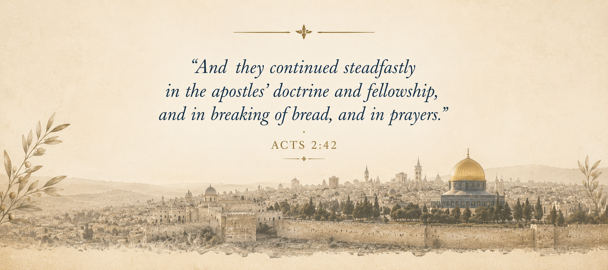

About the Book
Every generation inherits traditions, names, and histories that shape the way Scripture is understood. Many believers sincerely love Jesus Christ while worshipping within communities formed centuries after the events recorded in the New Testament. Beyond Denominations invites readers to take a different journey, returning to the place where the church first entered history and allowing the apostolic witness to speak with simplicity and clarity.
Rather than defending institutions or comparing religious movements, this book walks through the Book of Acts, following the preaching of Peter, John, Philip, and Paul as the gospel moves from Jerusalem to the ends of the known world. The narrative reveals remarkable consistency as different cities, cultures, and people encounter the same Lord, the same faith, and the same apostolic message.
The purpose of this work is neither controversy nor division. Every page has been written with respect for sincere believers everywhere while extending an invitation to examine Scripture before tradition and to rediscover the pattern established by the apostles themselves.
The chapters explore questions that have shaped Christian history for centuries, including repentance, baptism, the gift of the Holy Ghost, the name of Jesus Christ, apostolic doctrine, and the unity of the church. Each chapter returns to the biblical narrative, allowing the reader to follow the unfolding story rather than merely consider theological arguments.
Beyond Denominations ultimately asks one simple question that every seeker must answer personally.
Where did the church begin?
The answer is found not in later history but in the pages of Acts, where ordinary men and women encountered the risen Christ, received His promise, and continued steadfastly in the apostles' doctrine.
